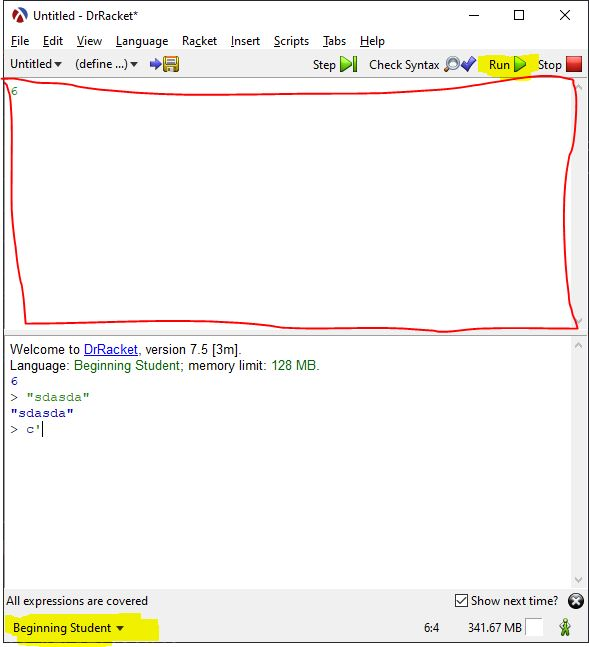

Racket
What is Racket?
Racket is a functional programming language based on Scheme (which is a dialect of Lisp).
It is very straight forward and very beginner friendly.
Using DrRacket, it is very easy to create simple games or application.
Basics
DrRacket IDE
Open DrRacket and this screen will look similar.
Definition window
The top window highlighted in red is called the definition window.
This is where variables, functions, and structures will be stored to run the program
REPL
The bottom window is called REPL. This stands for Read, Evaluate, Print, Loop.
It takes reads an input which could be a value or an expression, evaluate it, and loops.
Languages
Before doing anything, a language needs to be selected on the bottom left.
For beginners purposes, choose Beginning Student.
What this this does is restrict some built in functions to be used.
Therefore limiting the user to focus on the basics.
Everything covered here will be in beginners.
Syntax
Racket accepts simple and complex expressions.
Do note that more complex expressions must start with open parentheses and must close with ending parentheses.
Simple Data
Complex Expressions
Variables & Expressions
>(define x 10)>x10or
>(define (add-3 x) (+ x 3))>(add-3 5)8Other Functions
Math
(+ Number Number)(- Number Number)(* Number Number)(/ Number Number)Problems
Sample : Define a variable x and set the value to be 5.
Problem#1 : Define a variable x, and y to value 3 and 7.
Problem#2 : Define a variable xy and set the value to be 3.
Solution to Sample problem.
(define x 5)
Conclusion
There will be more to come!
Keep learning here